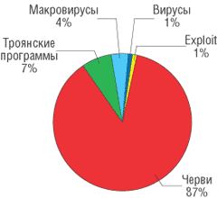
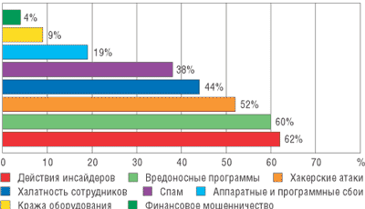
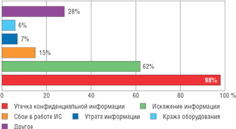
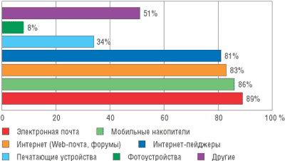
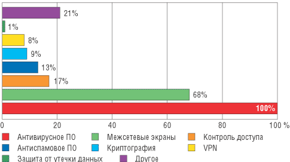
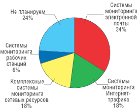

Андрей Колесов
Безопасность информационных систем традиционно связывают с защитой от внешних угроз - вирусов, хакерских атак, спама. Однако в последнее время ИТ-специалисты и заказчики все чаще говорят об актуальности темы внутренней безопасности - предотвращения утечек конфиденциальной корпоративной информации предприятий и организаций по причине умышленных и неумышленных неправомерных действий собственных сотрудников.
Учитывая эти проблемы, компания "Лаборатория Касперского" (http://www.kaspersky.ru), традиционно занимающаяся вопросами внешней защиты, в первую очередь от вирусов, создала в прошедшем году дочернюю структуру InfoWatch, нацеленную на борьбу с "внутренними врагами". В январе 2005 г. эти две компании представили обстоятельные обзоры ситуации в сфере информационной безопасности.
Внешние угрозы: вирусная активность продолжает нарастать
Обзор событий в области вредоносных программ - это традиционный ежегодный отчет, который "Лаборатория Касперского" представляет широкой общественности в течение уже нескольких лет. Помимо сведений о крупнейших вирусных инцидентах за прошедший год, в нем содержится анализ тенденций в сфере создания и распространения вирусов и прогнозы экспертов компании относительно дальнейшего развития ситуации. В этой статье мы рассмотрим наиболее важные положения данного исследования.
Крупнейшие вирусные эпидемии
В 2004 г. было зафиксировано 46 крупных вирусных эпидемий. Это больше, чем в предыдущем году (35 атак), причем многие из этих эпидемий были вызваны одновременным (в течение суток) появлением нескольких вариантов одного и того же вируса. Помимо роста числа эпидемий, отмечено было многократное увеличение их масштабности и побочных действий, влияющих на работу Интернета в целом. Эта тенденция наблюдается уже несколько лет, и можно с уверенностью констатировать, что с каждым годом вирусные эпидемии наносят все больший ущерб и вызывают все более существенные проблемы в работе Всемирной сети.
Две глобальные эпидемии 2004 г. можно назвать крупнейшими за всю историю Интернета - почтовый червь MyDoom.a (январь-февраль) и сетевой червь Sasser.a (май). Важно отметить, что эпидемия червя MyDoom.a привела к тому, что сайт компании SCO был неработоспособен в течение нескольких недель, а созданную MyDoom.a сеть зомби-машин злоумышленники впоследствии использовали в собственных целях, в том числе и для организации новых вирусных эпидемий. Кроме того, в Интернете были распространены исходные коды данного червя, что привело к появлению различных вариантов MyDoom, и некоторым из них также удалось вызвать крупные эпидемии 2004 г.
Sasser оказался "достойным продолжателем" дела сетевых червей, использующих уязвимости в системных службах ОС Windows и проникающих на компьютеры непосредственно через сетевые порты (вспомним 2003 г., когда аналогичные черви LoveSan и Welchia вызвали глобальные эпидемии).
Атака MyDoom стартовала в ночь с 26 на 27 января, когда одновременно по всему миру были зафиксированы сотни тысяч писем, содержащих в себе MyDoom.a. Уже в первые часы эпидемии стало ясно, что подобных масштабов за столь короткое время не удавалось достичь еще ни одному почтовому червю. На пике эпидемии червь содержался в каждом восьмом письме, проходящем через Интернет (по данным компании MessageLabs), а суммарное число посланных им писем, вероятнее всего, исчисляется десятками миллионов.
Проникнув на компьютер, червь, помимо рассылки своих копий по электронной почте, устанавливал в систему бэкдор, а также должен был начать 1 февраля 2004 г. DoS-атаку на сайт http://www.sco.com. MyDoom.a был запрограммирован на прекращение саморазмножения после 12 февраля, однако, несмотря на это, он еще в течение трех месяцев в заметных количествах наблюдался в почтовом трафике.
В апреле была обнаружена очередная уязвимость в Microsoft Windows, аналогичная прошлогодней (RPC DCOM), на этот раз в службе LSASS. Несмотря на то что "заплатка", закрывающая данную брешь, была выпущена в середине апреля, 1 мая в Интернете началась вторая крупнейшая эпидемия 2004 г. Ее причиной стал сетевой червь Sasser, заражающий компьютеры, где не был установлен патч для LSASS. В течение нескольких дней сетевой трафик весьма заметно вырос, что приводило к кратковременным сбоям в работе отдельных сегментов глобальной сети. По оценкам экспертов, общее число зараженных машин по всему миру составило несколько миллионов. К чести правоохранительных органов, им удалось в кратчайшие сроки установить автора данного червя и арестовать его.
Десятка самых распространенных вирусов в 2004 г.
|
Типы вредоносных программ в почтовом трафике
В течение всего 2004 г. почтовые черви оставались доминирующей разновидностью вредоносных программ (рис. 1). На втором месте - различные троянские программы, в том числе бэкдоры. Традиционные вирусы и макровирусы составили незначительную долю от общего числа. Самым же важным следует считать наличие в итоговой статистике одного эксплойта (Exploit.HTML.Mht). Это в полной мере отражает тот неприятный факт, что все растущее число обнаруживаемых в популярном браузере Internet Explorer уязвимостей не остается незамеченным вирусописателями, и вслед за каждой найденной уязвимостью обязательно появляется использующая ее вредоносная программа.
|  | Рис. 1. Распределение вредоносных программ по типам в 2004 г.
|
Тенденции
Наиболее важные изменения по сравнению с прошлыми годами определялись двумя факторами: с одной стороны, это криминализация Интернета, миграция вирусописателей и хакеров в сторону разработки adware и spyware (рекламных систем и шпионских программ), а с другой - выросшая оперативность антивирусных компаний, активизация работы правоохранительных структур в сфере борьбы с компьютерными преступлениями, результатом которой становится арест и осуждение виновных.
Среди основных тенденций последнего времени выделим следующие:
- так называемые adware (рекламные системы) становятся одной из основных проблем компьютерной безопасности;
- антивирусные компании вынуждены подключать к своим продуктам средства защиты от adware;
- почтовый трафик переполнен спамом, работа с почтой без антиспамового фильтра в большинстве случаев становится невозможной;
- появились многочисленные антиспамовые решения; использование подобных решений становится стандартом de facto для почтовых провайдеров;
- отмечены массовые успешные атаки на Интернет-банки и многочисленные случаи Интернет-рэкета (DDoS-атаки с последующим вымогательством);
- скорость реакции антивирусных компаний становится одним из основных критериев качества предоставляемой защиты;
- компьютерные преступления успешно расследуются (около 100 хакеров арестовано, трое попали в двадцатку самых разыскиваемых ФБР преступников).
Каждое следующее поколение "писателей" вредоносных программ стоит на плечах своих предшественников, поэтому мы видим развитие тенденций, появившихся в 2003 г.
Использование вирусописателями уязвимостей в ОС сегодня стало обыденным явлением. Некоторые вирусы 2004 г., такие, как Sasser, Padobot и Bobax, использовали системные уязвимости как единственный метод атаки, распространяясь через Интернет от компьютера к компьютеру и абсолютно не используя при этом "традиционные" методы заражения. Другие вредоносные программы, среди которых можно назвать Plexus и бесчисленные варианты Bagle, Netsky и MyDoom, совмещали использование брешей в ОС с другими методами заражения (массовая рассылка, использование сетевых ресурсов - к примеру, технологии P2P).
Множество "успешных" вирусов представляют собой связку различных видов атак - и все большее число таких связок содержит троянский компонент того или иного типа. Троянцы появляются в системе с помощью вируса или червя. Поскольку в троянские программы обычно не встраивается система размножения и заражения других компьютеров, они часто воспринимаются как менее опасная угроза, чем вирусы или черви. Однако следствия появления троянца в системе могут быть весьма опасны и непредсказуемы. Троянские программы не просто становятся сложнее, они все чаще используются в откровенно преступных целях.
В 2004 г. наблюдались также своего рода битвы между соперничающими вирусописателями. Например, вирус Netsky не просто заражал компьютеры - он также удалял с них любые экземпляры вирусов Mydoom, Bagle и Mimail. В довершение ко всему авторы вируса Netsky объявили войну авторам Bagle. На пике такой "войны" каждый день появлялось несколько экземпляров обоих червей, содержавших в своем теле угрозы в адрес недругов.
Авторы Bagle и Netsky также впервые использовали пароль для вложений в письма - очевидно, для того, чтобы усложнить обнаружение вредоносной программы. В теле письма содержался пароль к архиву, так что у пользователя были все данные для открытия вложения, содержавшего вирус.
Техника массовой рассылки зараженных писем, эффективная еще со времен вируса Melissa (март 1999 г.), с тех пор использовалась при распространении многих известных вирусов. Однако не стоит забывать про другие методы распространения. В частности, в 2004 г. началось широкое распространение ссылок, ведущих на сайт, где находится вредоносный код (сетевые экраны могут блокировать вложения с подозрительными расширениями - .EXE, .SCR и т. д., но письма со ссылками беспрепятственно минуют эту защиту).
"Лаборатория Касперского" отметила также существенное увеличение числа троянских программ-шпионов, ворующих конфиденциальную финансовую информацию. Десятки новых вариантов таких программ появляются на свет каждую неделю, часто различаясь по своей функциональности и форме. Некоторые из них просто шпионят за клавиатурой, отсылая введенные пользователем пароли по электронной почте автору троянца. Троянские программы с более сложной структурой предоставляют автору полный контроль над компьютером жертвы, посылая данные на удаленные серверы и получая дальнейшие команды с этих серверов.
Растет и число программ, которые сами по себе не относятся к вредоносным, но оставляют в системе троянскую программу (TrojanDropper) или загружают ее из Интернета (TrojanDownloader). У тех и других одна цель: установить на зараженной машине вредоносное ПО, будь то вирус, червь или другая троянская программа. Большинство программ этого класса написаны на Visual Basic Script (VBS) или JavaScript (JS). Их код достаточно прост, они могут выполнять различные задачи.
Эти программы используются не только для установки другого вредоносного кода. Часто они служат для установки без ведома пользователя так называемых adware и pornware - программ, которые, не будучи вирусами, собирают информацию о пользователе. Adware - это программы, которые отображают рекламу, иногда баннеры, без ведома и согласия пользователя. Pornware - программы, которые соединяются с платными порнографическими сайтами (также без ведома и согласия пользователя).
Использование троянских программ для кражи паролей, доступа к конфиденциальной информации, осуществления DDoS-атак и распространения спама выводит на первый план важное изменение в природе угроз безопасности - их коммерциализацию. Очевидно, что компьютерный андерграунд осознал потенциал заработка в сети с помощью своих вредоносных творений. К той же области действий относится использование зомби-машин и распродажа зомби-сетей на аукционах для спамеров или, к примеру, вымогательство, когда такая сеть зомби-машин используется для показательных DDoS-атак на сайт жертвы. Стоит упомянуть еще так называемый фишинг - аферу, позволяющую обмануть пользователей так, чтобы они отправили злоумышленникам информацию о своих банковских счетах (имя пользователя, пароль, PIN-код и т. д.)
В 2004 г. впервые появились угрозы безопасности мобильных устройств. Cabir, первый вирус для мобильных телефонов, появился в июне. Это был, если можно так выразиться, "концептуальный проект", подтверждающий возможность создания вирусов для подобных платформ. Авторами оказалась группа вирусописателей, называющая себя 29A. Дело Cabir продолжили Duts в июле (дело рук той же 29A) и троянец Brador в августе, нацелившись на платформу PocketPC.
Число мобильных устройств растет день ото дня, а с ним - и использование технологий беспроводной связи (802.11b, Bluetooth и т. п.). Такие устройства достаточно сложны - они используют IP-сервисы, предоставляют доступ в Интернет и легко включаются в корпоративные сети, а также обеспечивают пользователям дистанционное соединение с другими устройствами или сетями. К несчастью, их безопасность оставляет желать лучшего, поскольку такие устройства часто находятся вне пределов системы безопасности корпоративной сети. Но при этом мобильные устройства уже сейчас содержат конфиденциальную информацию, а значит, могут стать притягательной мишенью для атак злоумышленников.
2004 г. ознаменовался также громкими арестами авторов вредоносного кода. В феврале была арестована бельгийская вирусописательница Gigabyte. В мае два злоумышленника были задержаны в Германии: первым был Свен Яшен, сознавшийся в причастности к написанию вируса Sasser и некоторых вариантов Netsky, а второй программист был арестован за создание бесчисленных вариантов Agobot/Phatbot. Эти аресты последовали за объявлением Microsoft наград за информацию, которая приведет к поимке авторов вирусов.
Молниеносное распространение вирусов и червей на протяжении последних лет выявило глобальную угрозу безопасности. Закон, однако, тоже не стоит на месте, и постепенно объединение властей разных стран для поимки преступников становится всемирным феноменом. Один пример успешной деятельности такого рода - октябрьский арест 28 человек одновременно в шести странах по обвинению в краже личных данных. В операции принимали участие разведка США, Национальный комитет по борьбе с преступностью Великобритании, Ванкуверский департамент полиции по борьбе с финансовой преступностью (Канада), Королевская конная полиция (Канада), Европол и полицейские агентства в Белоруссии, Польше, Швеции, Нидерландах и Украине.
Прогнозы на год 2005-й
Скорее всего, перечисленные тенденции будут иметь место и в наступившем году, и "Лаборатория Касперского" прогнозирует их усиление. До тех пор, пока описанные выше техники эффективны в атаках на пользователей компьютеров, авторы вредоносного кода будут продолжать их использовать. В первую очередь это будет массовая рассылка и использование брешей в ОС для атаки уязвимых компьютеров, а также распространение троянских программ для кражи информации, создания платформ для DDoS-атак или распространения спама.
Будут распространяться и методы, вошедшие в употребление в прошлом году, - к примеру, использование ссылок на вредоносный код в письмах. Ключевой фактор состоит в том, что эти методы хорошо зарекомендовали себя как среди авторов вредоносного кода, так и среди тех, кто платит им за создание программ для нелегального заработка.
Конечно, творения рук злоумышленников будут совершенствоваться, авторы таких программ будут добавлять в них новые возможности, чтобы сделать их еще более эффективными, и алгоритмы "самозащиты" для того, чтобы сделать их обнаружение и удаление более сложным. Как и в прошлом, авторы вредоносных программ скажут новое слово в их написании. В частности, их целью вполне могут стать мобильные устройства, которые все шире используются как корпорациями, так и индивидуальными пользователями.
Внутренние угрозы выходят на первый план
В то время как в представлении широкой общественности основные проблемы ИТ-безопасности связываются с вирусными эпидемиями и хакерскими атаками, результаты исследований многих авторитетных аналитических организаций красноречиво свидетельствуют, что основная опасность заключается во внутренних ИТ-угрозах. В частности, в отчете ФБР (2004 г.) показано, что умышленные и неосторожные неправомерные действия сотрудников стали лидирующим фактором по объему причиненного ущерба. Прошлогоднее исследование Ernst&Young также вывело эту проблему на второе место, причем она опередила риски спама, хакерских атак и финансового мошенничества (см. "Внутренние угрозы ИТ-безопасности", "BYTE/Россия" № 12'2004).
До недавнего времени для демонстрации актуальности этой темы обычно давались ссылки на зарубежные источники, ситуация в России в данной области оставалась практически неизученной. Восполняя этот пробел, компания InfoWatch (http://www.infowatch.ru) провела во второй половине 2004 г. исследование "Проблемы внутренней информационной безопасности в России", охватившее около 400 государственных и коммерческих организаций России. Респондентами выступили директора ИТ-отделов, отделов ИТ-безопасности, ведущие ИТ-специалисты. Ниже мы рассмотрим основные положения итогового отчета.
Оценка опасности угроз
Исследование положения дел и отношения российских организаций к внутренним ИТ-угрозам выявили целый ряд противоречивых фактов, которым, однако, есть логичное объяснение.
Отвечая на первый же вопрос, касающийся оценки опасности различных ИТ-угроз, респонденты высказали наибольшую озабоченность действиями самих сотрудников компаний - инсайдеров (на первое место их поставили 62%). Именно инсайдеры, по мнению опрашиваемых, могут создавать самые существенные препятствия для нормальной работы организации. Очевидно, что такая точка зрения ИТ-специалистов расходится с мнением широкой общественности и СМИ, которые больше верят традиционным "страшилкам" об опасности вирусов, хакерских атак и спама (впрочем, это мнение формируется не само по себе, а под влиянием данных аналогичных исследований поставщиков средств защиты). Тем не менее в пятерку самых опасных угроз (рис. 2) также вошли вредоносные программы, хакерские атаки, халатность сотрудников и спам. Остальные варианты (аппаратные и программные сбои, финансовое мошенничество, кража оборудования) присутствовали в результатах опроса эпизодически.
|  |
| Рис. 2. Оценка опасности различных ИТ-угроз.
|
Внимание к проблематике внутренней ИТ-безопасности растет вместе с размером организации-респондента и меняется в зависимости от сферы деятельности. Например, для компаний с численностью сотрудников менее 500 человек на первое место выходит вопрос защиты от вредоносных программ. С другой стороны, в организациях с 2500 и более сотрудников на первое место ставится угроза "действия инсайдеров".
Такой результат объясняется тем, что крупные компании имеют в штате квалифицированных специалистов по ИТ-безопасности и надежные технические средства защиты от внешних угроз, что позволяет им чувствовать себя относительно комфортно. Большинство же малых и часть средних предприятий до сих пор обходятся без выделенных сотрудников для защиты информационных систем, недостаточно осведомлены о последних разработках в области защиты данных и зачастую используют пиратские копии ПО. Для них вирусы и хакерские атаки представляют гораздо большую угрозу, зато контроль над действиями сотрудников они могут осуществлять альтернативными способами, без программных или аппаратных решений. В крупных же организациях отслеживание инсайдеров средствами кадрового менеджмента и службы физической безопасности менее эффективно, в то время как цена утечки информации возрастает пропорционально численности сотрудников.
Отметим, что российские респонденты пока не слишком озабочены опасностью финансового мошенничества с использованием ИТ-систем (в силу того, что методы компьютерных финансовых транзакций в нашей стране еще недостаточно распространены).
Самые опасные внутренние ИТ-угрозы
Исследование проблемы внутренних ИТ-угроз показало, что российские организации больше всего озабочены утечкой конфиденциальной информации: 98% респондентов поставили этот риск на первое место. Второе место занял риск искажения информации. Остальные угрозы - сбои в работе ИС по причине халатности персонала, утрата информации, кража оборудования - отстают со значительным разрывом (рис. 3).
|  |
| Рис. 3. Оценка опасности внутренних ИТ-угроз.
|
В данном случае, как и в предыдущем, - чем крупнее организация, тем актуальнее для нее проблема предотвращения утечки. Это связано с тем, что все важные данные дублируются на резервных накопителях для экстренного восстановления в случае искажения или утраты. В то же время на больших предприятиях затруднен контроль над обращением информации и существенно возрастает цена утечки. Потеря конфиденциальности влечет за собой материальный ущерб и потери для имиджа, в особых случаях - и риск раскрытия государственной тайны. Эти обстоятельства определяют высокий уровень озабоченности данной проблемой со стороны крупного бизнеса и правительственных организаций.
Пути утечки данных и оценка ущерба
Что касается технических путей утечки конфиденциальной информации, мнения респондентов об их опасности практически совпали (рис. 4). Электронная почта, Интернет, сетевые пейджеры и мобильные накопители (компакт-диски, USB-устройства) получили практически одинаковую оценку (80-90%). Прочие источники (печатающие устройства, фотоаппараты, в том числе мобильные телефоны с фотокамерами) оказались позади с существенным отставанием. Велика также доля ответов "другие" - 51%.
|  |
| Рис. 4. Оценка опасности различных путей утечки данных.
|
Детальное изучение внутренних инцидентов, связанных с утечкой, утратой или искажением информации, продемонстрировало весьма тревожное явление: подавляющее большинство респондентов не могут точно определить масштабы этой ИТ-угрозы. Так, 67% опрошенных вообще затруднились ответить на поставленный вопрос. Более или менее четкий ответ смогли дать лишь 6%, из которых 99% затруднились оценить нанесенный ущерб в финансовых показателях по причине отсутствия системы учета или нежелания терять время. Одновременно 26% респондентов заявили об отсутствии такого рода инцидентов, но уточняющий вопрос о возможности существования неучтенных утечек показал: почти в 100% случаев они наверняка имеют место, но остаются неучтенными или намеренно не фиксируются по различного рода соображениям.
Защита от утечки данных: миф или реальность?
На фоне высокой степени озабоченности проблемой внутренней ИТ-безопасности отношение респондентов к защите от этих угроз ппредставляется очень странным (рис. 5). В ходе изучения вопроса о номенклатуре используемых средств ИТ-безопасности выяснилось, что в российских организациях наиболее популярны антивирусные программы (их используют 100% опрошенных) и межсетевые экраны (68%). Остальные технологии (такие, как шифрование, контроль доступа, антиспамовое ПО, VPN) присутствовали в структуре ответов эпизодически. Однако наибольшее удивление вызвал практически нулевой результат в том, что касается применения систем защиты от утечки конфиденциальной информации - той самой ИТ-угрозы, которую большинство респондентов поставили на высшую ступень опасности. Эти данные наглядно показывают разрыв между оценкой критичности угрозы и реальными шагами для ее нейтрализации.
|  |
| Рис. 5. Оценка популярности систем ИТ-безопасности.
|
Однако следующий этап исследования внес ясность в эту противоречивую ситуацию. Вопрос о возможных путях защиты от внутренних угроз выявил явное смещение в пользу технических средств защиты: 87% респондентов посчитали, что это наиболее простой и эффективный способ минимизировать риск утечки информации. Далее с большим отрывом следовали организационные меры (24%), ограничение связи с внешними сетями (17%), тренинги сотрудников (11%), системы физического доступа (6%) и другие способы (26%)*.
* Эти показатели говорят о том, что российские ИТ-специалисты неправильно подходят к вопросу внутренней безопасности с чисто методологической точки зрения. Теория и практика систем безопасности четко указывают, что главное в этом деле - организационные методы, а технические средства могут лишь обеспечить их реализацию.
Вместе с тем изучение уже используемых систем защиты еще раз продемонстрировало крайнюю степень пренебрежения угрозой - 68% респондентов в ответе на этот вопрос прямо заявили, что в их организациях вообще отсутствует какая-либо защита от утечки данных.
Отдельного внимания заслуживает широкое применение такого средства, как ограничение связи с внешними сетями, прежде всего с Интернетом. Отвечая на вопрос о путях защиты ИС, 17% признали это достаточно эффективным средством, а, характеризуя свои системы защиты, 15% заявили, что именно данный способ и используется в их организации. Более глубокий анализ последней группы респондентов показал, что это почти исключительно представители государственных организаций. Такой результат объясняется действием Указа Президента РФ № 611 от 12 мая 2004 г. "О мерах по обеспечению информационной безопасности Российской Федерации в сфере международного информационного обмена". В частности, Указ запрещает российским предприятиям подключать к Интернету информационные системы, в которых обрабатывается информация, содержащая государственную тайну, и служебная информация ограниченного распространения.
Объяснение слабого использования технических средств и организационных мер нашлось в ответе на следующий вопрос - о препятствиях на пути внедрения систем защиты от внутренних ИТ-угроз. В данном случае респондентам предлагалось выбрать только одну, самую значимую причину - и таковой оказалось отсутствие специализированных технологических решений (58%). Наиболее распространенная проблема, тормозящая внедрение ИТ, а именно бюджетные ограничения, набрала в данном случае всего лишь 19% голосов. В то же время остальные трудности (нехватка персонала, юридические препятствия, отсутствие стандартов) присутствовали в результатах опроса эпизодически.
Уверенность респондентов в отсутствии технологических решений для защиты от утечки секретных данных требует особого обсуждения. Как показывает анализ конкурентной ситуации, на рынке присутствует несколько достаточно известных продуктов, которые способны минимизировать риск нарушения конфиденциальности информации. При подробной беседе с респондентами выяснилось, что большинство слышали об этих продуктах, но не представляли себе возможности их применения для таких специфических целей.
Такое положение вещей однозначно указывает на большие перспективы рынка специализированных средств защиты. В условиях недостаточного предложения и большого потенциального спроса наиболее активные игроки смогут быстро занять доминирующее положение в этом сегменте как в России, так и во всем мире.
Некоторое удивление вызывает и еще один результат опроса - низкая озабоченность юридическими препятствиями на пути внедрения систем защиты внутренней ИТ-безопасности. Вместе с тем в европейских странах именно эта проблема вызывает наибольшую обеспокоенность. Защита от утечек информации в любом случае связана с необходимостью сканирования данных пользователей (электронные письма, Web-трафик, файловые операции). А ведь это обстоятельство может вступить в противоречие с действующим законодательством (тайна переписки), если внедрение защиты не будут сопровождать соответствующие организационные меры (принятие политики обращения с электронной конфиденциальной информацией). Как видно из ответов, проблемы соблюдения прав частных лиц в нашей стране стоят совсем не на первом плане.
Среди технических средств защиты от утечки конфиденциальной информации, планируемых к внедрению в течение ближайших двух лет, респонденты особо выделили системы мониторинга электронной почты и Интернет-трафика (рис. 6). Более крупные организации предпочли внедрение комплексных систем мониторинга сетевых ресурсов, которые также обеспечивают контроль над файловыми операциями на уровне рабочих станций. Только 24% опрошенных заявили об отсутствии планов внедрения специализированных систем защиты, в основном из-за бюджетных ограничений.
|  | Рис. 6. Планы внедрения технических средств обеспечения внутренней ИТ-безопасности.
|
Итоги исследования
Исследование проблем внутренней информационной безопасности показало, что в России только начинает формироваться культура профессионального отношения к ИБ: из опрошенных организаций лишь в 16% имеются выделенные отделы ИБ. В 94% случаев эти отделы были сформированы в течение последних двух лет.
Как следует из ответов респондентов:
- 62% считают, что действия инсайдеров представляют самую большую угрозу для российских организаций;
- 98% считают, что нарушение конфиденциальности информации - самая большая внутренняя ИТ-угроза;
- 89% считают электронную почту самым распространенным путем утечки конфиденциальной информации;
- 67% не осведомлены о наличии в сети организации инцидентов, связанных с утечкой данных;
- 99,4% допускают возможность наличия незарегистрированных инцидентов внутренней ИБ;
- 87% считают технические средства эффективным способом защиты, однако всего 1% респондентов используют их, в то время как 68% вообще не предпринимают никаких действий.
Отметим, что, чем больше организация, тем выше ее озабоченность угрозой утечки конфиденциальной информации.
Российские организации осознают опасность внутренних ИТ-угроз, но не знают, как с ней бороться: 58% не осведомлены о существующих технологических решениях. Тем не менее 76% планируют внедрение систем защиты от нарушения конфиденциальности информации в ближайшие два года.
Таким образом, рынок систем защиты от утечки данных (anti-leakage software) только начинает формироваться и имеет большой потенциал. Наиболее активные игроки в этом сегменте отечественного рынка имеют возможность многократно увеличить доходы и принять участие в формировании международного рынка специализированных решений защиты.